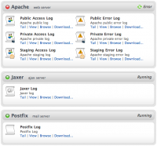
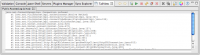
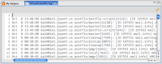
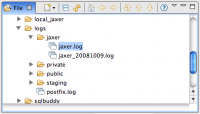
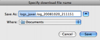

Contents |
What
  Logs
Logs
{kind=link}
The Logs screen in Aptana Cloud lets you view logs for services running on the cloud servers, including:
- Apache
- Jaxer
- Postfix
You can view Access logs and Error logs for each Apache server instance (private, staging, and public) as well as the Jaxer and Postfix logs.
For each available log you can do four things:
- Tail
- View
- Browse
- and Download...
How
Tail
 Tail View
{kind=link}
Clicking tail will tail the log similar to the
tail command in Unix; that is, it will update in near real time as the log file updates on the server. The tail will be launched in the tail view window, in the console row below the editors.View
 View a log
{kind=link}
Clicking view will open the log in a regular window in the main working area of the IDE. The file will not be editable.
Browse
 Browse
{kind=link}
Clicking browse will open the file browser and navigate to the appropriate log file with the containing folders expanded.
Download
 Download a log
{kind=link}
Clicking download simply will pop-up a save-file-as dialog.